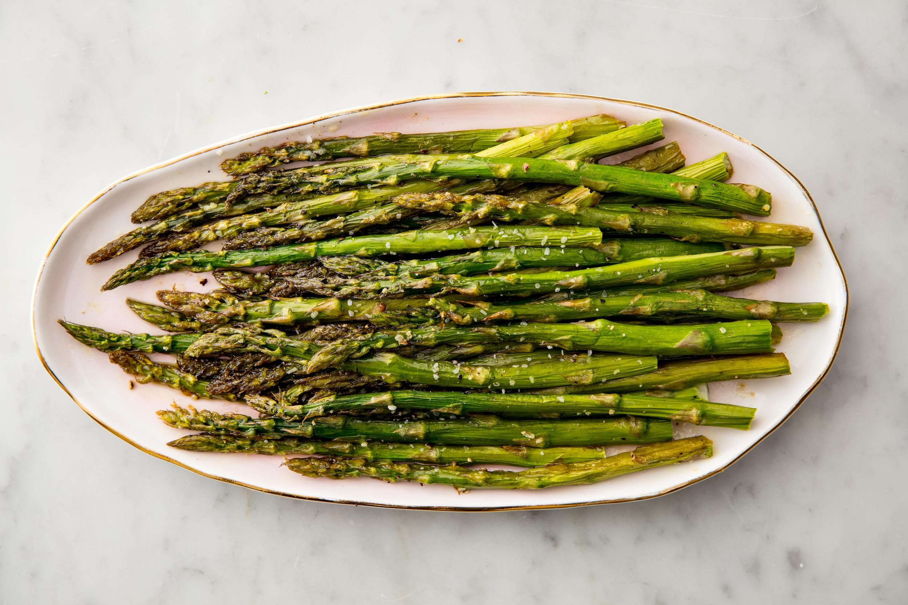

Main Page
Great Oven-Roasted Asparagus!
Shawn's Oven-Roasted Asparagus Recipe

Recipe Description
This easy tasty asparagus recipe is one of a kind!
Only having a handful of fresh ingredients you can have this dish done in under an hald an hour!
Ingredients
- 1 bunch thin asparagus spears
- 3 tbps olive oil
- 1 1/2 tbps grated Parmesan cheese (optional)
- 1 clove garlic (optional)
- 1 tsp salt
- 1/2 tsp ground black pepper
- 1 tbsp lemon juice (optonal)
Steps
- Preheat an oven to 425 degrees F (220 degrees C)
- Place the asparagus into a mixing bowl, and drizzle with the olive oil.
Toss to coat the spears, then sprinkle with Parmesan cheese, garlic, salt,
and pepper. Arrange the asparagus onto a baking sheet in a single layer.
- Bake in oven until just tender, 12-15 minutes. Springle with lemon juice
before serving